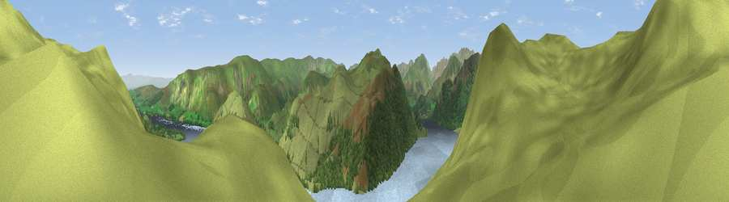

Viewpoint near Dockray
#2828 in England · top 18% of its area beats it · near DockrayThe view, rendered

A 360° render of this exact spot computed from the terrain model, tree cover and land cover — summer colours, afternoon light, calibrated against photographs of famous viewpoints. Real trees, hedges and buildings will differ in detail.
The panorama
Grey silhouette: terrain skyline in each direction (720 bearings, Earth curvature and refraction included). Dashed green: skyline with trees (+15 m) and buildings (+8 m) as obstacles. Blue strip: how far the ground is visible on each bearing.
Where the view opens
Wedge length = distance to the farthest visible ground on that bearing (vegetation-aware). Rings at 10, 25 and 50 km.
What fills the view
50% grassland · 30% water · 20% woodland
Angular shares of the visible panorama (visual magnitude), not map area. Landscape diversity 0.45 (0–1 Shannon).
Key numbers
More beautiful places nearby
The staircase of upgrades: each row has a higher view potential than everything closer. Driving times are estimates from straight-line distance, calibrated against real road routing — check an actual route before setting out.
| Place | Direction | Drive | Score |
|---|---|---|---|
| Common Fell | W · 3 km | ~7 min | 76.7 |
| Viewpoint near Watermillock | NNE · 3 km | ~8 min | 79.0 |
| Viewpoint near Watermillock | E · 4 km | ~10 min | 80.1 |
| Viewpoint near Watermillock | E · 5 km | ~11 min | 83.5 |
| Viewpoint near Legburthwaite | SW · 9 km | ~18 min | 83.8 |
| Viewpoint near Legburthwaite | WSW · 9 km | ~19 min | 84.5 |
| Skiddaw South Top | WNW · 17 km | ~30 min | 85.8 |
| Viewpoint near Applethwaite | WNW · 17 km | ~30 min | 86.7 |
54.57963, -2.91354 · source: screening · position refined by local search. Computed location — check access rights before visiting.